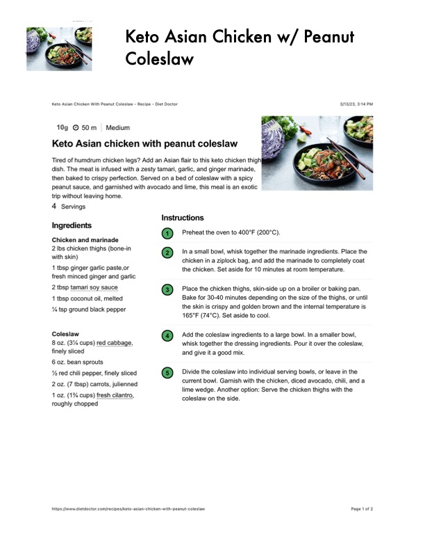

Keto Asian Chicken w/ Peanut

Original cookbook page 436
Ingredients
- Chicken and marinade
- 2 lbs chicken thighs (bone-in
- with skin)
- 1 tbsp ginger garlic paste,or
- fresh minced ginger and garlic
- 2 tbsp tamari soy sauce
- 1 tbsp coconut oil, melted
- Ya tsp ground black pepper
- Coleslaw
- 8 oz. (3% cups) red cabbage,
- finely sliced
- 6 oz. bean sprouts
- '4 red chili pepper, finely sliced
- 2 oz. (7 tbsp) carrots, julienned
- 1 oz. (1% cups) fresh cilantro,
- roughly chopped
Instructions
- Preheat the oven to 400°F (200°C). In a small bowl, whisk together the marinade it chicken in a ziplock bag, and add the marinad the chicken. Set aside for 10 minutes at room Place the chicken thighs, skin-side up on a bre Bake for 30-40 minutes depending on the size the skin is crispy and golden brown and the in\ 165°F (74°C). Set aside to cool. and give it a good mix. current bowl. Garnish with the chicken, diced < lime wedge. Another option: Serve the chicker coleslaw on the side. https:/imww.dietdoctor.com/recipes/keto-asian-chicken-with-peanut-coleslaw
Recipe #436 from collection